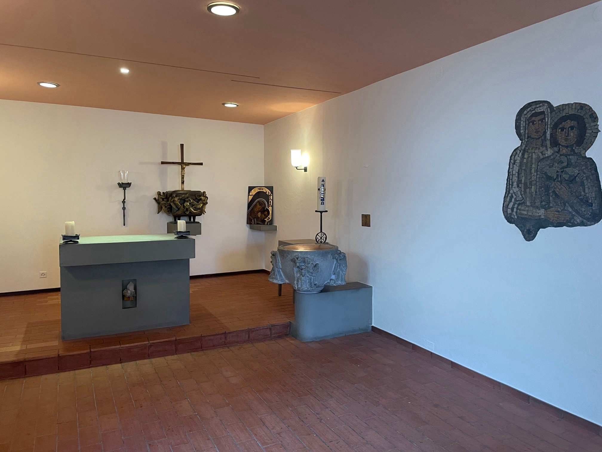

Mitten in Kleinbasel, in einem weiten ummauerten Hof nahe am Rhein, stösst man auf eine hohe Linde, eine Nachfahrin jener Linden, die dem Areal einst seinen Namen Lindenberg gaben und es zu einem Treffpunkt machten. 1576 erwarb der Söldnerführer Nikolaus von Hattstatt (1510–1585) das Areal mit dem imposanten Hauptgebäude, das nach ihm den bis heute gebräuchlichen Namen ‹Hattstätterhof› erhielt. Basel war damals eine streng der Reformation verpflichtete Stadt. Erst im 18. Jahrhundert öffnete sie sich katholischen Zuzügern und Zuzügerinnen, die als Arbeitskräfte gebraucht wurden. Seit 1798 durfte in der dem Lindenberg nahe gelegenen Clarakirche katholischer Gottesdienst gefeiert werden.
Katholische Anfänge am Lindenberg
Die Gemeinde der katholischen Konfessionsangehörigen vergrösserte sich
im Verlauf des 19. Jahrhunderts und gewann innerhalb der städtischen
Bevölkerung an Gewicht. Die provisorische Unterbringung der Seelsorger
und der Schule rief nach einer dauerhaften Lösung. Mit Hilfe der
Regierung konnte 1836 der Hattstätterhof mit dem Ziel erworben werden,
ihn als Schul- und Pfarrhaus zu nutzen. Zukäufe anliegender Gebäude
rundeten den Besitz der geduldeten katholischen Kirchgemeinde ab.
Der Lindenberg entwickelte sich, wie Streiflichter auf seine Geschichte
im 19. und 20. Jahrhundert zeigen, zum religiös-gesellschaftlichen
Zentrum der Basler Katholiken und Katholikinnen. Seit dem Ersten
Vatikanischen Konzil (1869–1870) sammelte sich hier am Lindenberg der
Kern der römisch-katholischen Kirchgemeinde Basels, von der sich die
Christkatholiken ablösten.
Römisch-katholische Seelsorge in den 1870er-Jahren
Das papsttreue, dem ersten Vatikanum verpflichtete Seelsorgeteam im Hattstätterhof zählte im Jahr 1870 den Pfarrer von St. Clara, Burkard Jurt (1822–1900), und vier Vikare. Ein Viertel der damaligen Wohnbevölkerung Basels, das heisst um die 12'000 Seelen, war katholischen Glaubens, ohne dass in dieser Zahl schon zwischen Römisch-Katholiken und Christkatholiken unterschieden wurde Die grosse Mehrheit katholischer Eltern schickte ihre Kinder in die Pfarreischule am Lindenberg. Dort unterrichteten seit 1839 Lehrschwestern und seit 1855 Schulbrüder.

Der Hattstätterhof um 1880. (Bild: Staatsarchiv Basel-Stadt, Bild 4, 220)
In unmittelbarer Nähe des Hattstätterhofs baute die katholische Gemeinde 1851 ein Mädchenschulhaus und 1865 ein Knabenschulhaus; ein benachbartes Gebäude, das Haus ‹Zur Rheinlust›, bot seit 1877 weitere Räume für den Unterricht. Im Jahr 1884 wirkten am Lindenberg 38 Ordensleute: 23 Schwestern der Vorsehung von Portieux und 18 Schulbrüder der Kongregation der Marianisten. Unter der Oberleitung des römisch-katholischen Pfarrers trugen sie die schulische Verantwortung für 1'500 Kinder und Jugendliche.
Kulturkampf in Basel
Die Schule der Römisch-Katholiken war den seit 1875 in Basel regierenden freisinnigen Politikern ein Dorn im Auge. So kam es 1884 in Basel zu einem Nachspiel des Kulturkampfs, der schweizweit zwei Jahrzehnte früher eingesetzt hatte. Den Ordensleuten sollte die Erteilung des Unterrichts entzogen, die katholische Jugend der öffentlichen Schule eingegliedert werden. Der Grosse Rat befürwortete mehrheitlich diese Sicht, die in der Volksabstimmung vom 24. Februar 1884 ihre Bestätigung fand. Auf den Volksentscheid hin verliessen die Schulbrüder und 14 Schwestern Basel. Die verbliebene Kommunität der Schwestern der Vorsehung – im Volksmund ‹Lindenbergschwestern› genannt – baute ihre Aufgaben im diakonischen Bereich weiter aus, führte in der ehemaligen Mädchenschule am Oberen Rheinweg ein Kinderheim und erteilte bis in die jüngste Zeit Religionsunterricht in der öffentlichen Primarschule.
Katholische Milieubildung
Die Schliessung der katholischen Schule ermöglichte es, die freigewordenen Lokalitäten am Lindenberg neu zu nutzen. Nutzniesser waren das Pfarramt, die Verwaltung der römisch-katholischen Gemeinde sowie die in rascher Folge entstehenden katholischen Vereine: der Kaufleuteverein ‹Merkuria›, die Männerkongregation, der Jungmännerbund, der katholische Turnverein, der Vinzenzverein, die Vereinigung der Alten Hattstätter (1929) und andere; bei den Frauen die Jungfrauenkongregation, der Elisabethenverein, der Mütterverein, die Turnerinnengruppe, der Paramentenverein, um nur die wichtigsten zu nennen. Die katholischen Vereine, eigentlicher Nährboden des katholischen Milieus, hatten ihre Blütezeit in den Jahren 1880 bis 1960. Der Lindenberg wurde Treffpunkt, wo sich Basels Katholiken und Katholikinnen zu kirchlichen Festen und gesellschaftlichen Anlässen einfanden. Der Hattstätterhof verkörperte als katholisches Pfarrhaus mit eigener Kapelle (seit 1836) den spirituellen Zusammenhalt.
Gesellschaftliche und ökumenische Öffnung

Der Hattstätterhof 2022. (Bild: Regula Vogt-Kohler)
Die Lindenbergkapelle. (Bild: Matthias Schmitz, Römisch-Katholische Kirche Basel-Stadt)
Abbildungsnachweis, Titelbild: Eingangstor zum Lindenberg. (Bild: Matthias Schmitz, Römisch-Katholische Kirche Basel-Stadt)
autor
Weitere Artikel von {{ author.author }} finden Sie hier:
Zur Vertiefung:
- textb4link (Leerzeichen am Schluss) text